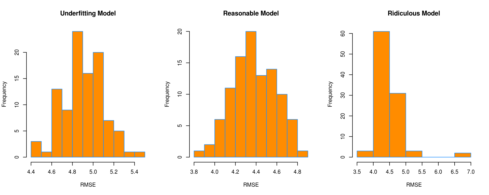
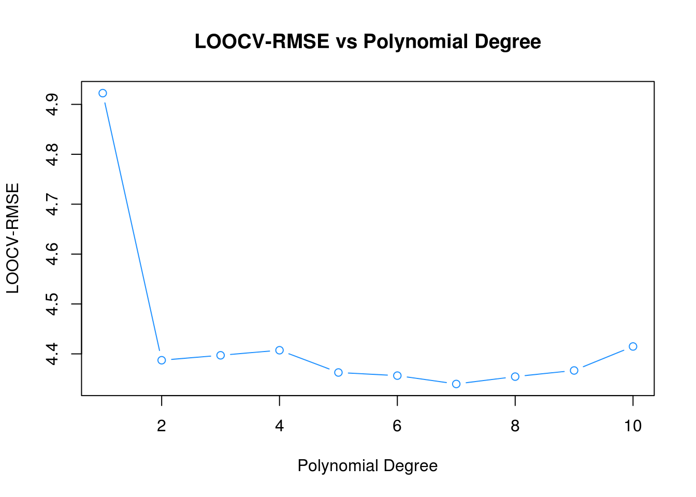
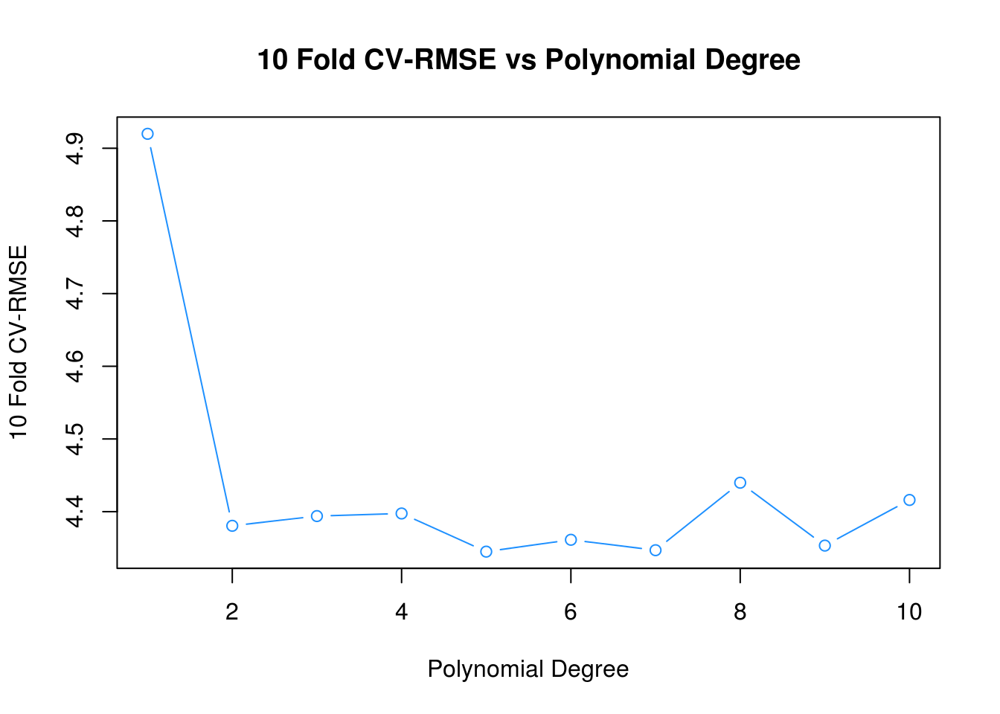
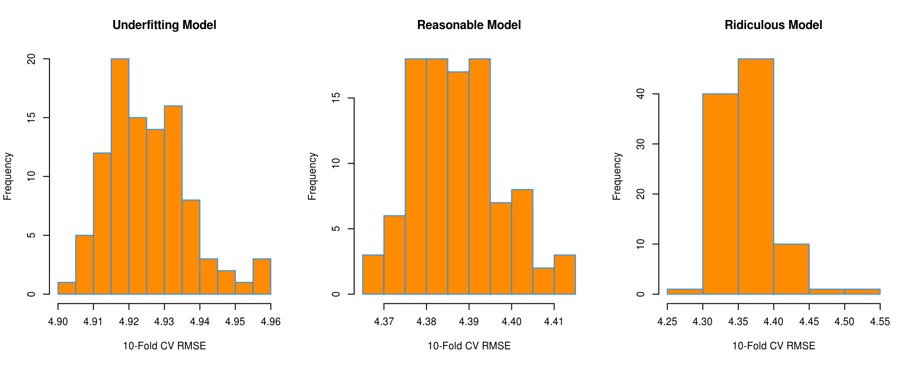

Chapter 20 Resampling
In this chapter we introduce resampling methods including cross-validation and the bootstrap.
library(ISLR)Here, we will use the Auto data from ISLR and attempt to predict mpg (a numeric variable) from horsepower.
## # A tibble: 392 x 9
## mpg cylinders displacement horsepower weight acceleration year
## * <dbl> <dbl> <dbl> <dbl> <dbl> <dbl> <dbl>
## 1 18 8 307 130 3504 12.0 70
## 2 15 8 350 165 3693 11.5 70
## 3 18 8 318 150 3436 11.0 70
## 4 16 8 304 150 3433 12.0 70
## 5 17 8 302 140 3449 10.5 70
## 6 15 8 429 198 4341 10.0 70
## 7 14 8 454 220 4354 9.0 70
## 8 14 8 440 215 4312 8.5 70
## 9 14 8 455 225 4425 10.0 70
## 10 15 8 390 190 3850 8.5 70
## # ... with 382 more rows, and 2 more variables: origin <dbl>, name <fctr>
20.1 Test-Train Split
First, let’s return to the usual test-train split procedure that we have used so far. Let’s evaluate what happens if we repeat the process a large number of times, each time storing the test RMSE. We’ll consider three models:
- An underfitting model:
mpg ~ horsepower - A reasonable model:
mpg ~ poly(horsepower, 2) - A ridiculous, overfitting model:
mpg ~ poly(horsepower, 8)
set.seed(42)
num_reps = 100
lin_rmse = rep(0, times = num_reps)
quad_rmse = rep(0, times = num_reps)
huge_rmse = rep(0, times = num_reps)
for(i in 1:100) {
train_idx = sample(392, size = 196)
lin_fit = lm(mpg ~ horsepower, data = Auto, subset = train_idx)
lin_rmse[i] = sqrt(mean((Auto$mpg - predict(lin_fit, Auto))[-train_idx] ^ 2))
quad_fit = lm(mpg ~ poly(horsepower, 2), data = Auto, subset = train_idx)
quad_rmse[i] = sqrt(mean((Auto$mpg - predict(quad_fit, Auto))[-train_idx] ^ 2))
huge_fit = lm(mpg ~ poly(horsepower, 8), data = Auto, subset = train_idx)
huge_rmse[i] = sqrt(mean((Auto$mpg - predict(huge_fit, Auto))[-train_idx] ^ 2))
}
Notice two things, first that the “Reasonable” model has on average the smallest error. Second, notice large variability in the RMSE. We see this in the “Reasonable” model, but it is very clear in the “Ridiculous” model. Here it is very clear that if we use an “unlucky” split, our test error will be much larger than the likely reality.
20.2 Cross-Validation
Instead of using a single test-train split, we instead look to use cross-validation. There are many ways to perform cross-validation R, depending on the method of interest.
20.2.1 Method Specific
Some method, for example glm() through cv.glm() and knn() through knn.cv() have cross-validation capabilities built-in. We’ll use glm() for illustration. First we need to convince ourselves that glm() can be used to perform the same tasks as lm().
glm_fit = glm(mpg ~ horsepower, data = Auto)
coef(glm_fit)## (Intercept) horsepower
## 39.9358610 -0.1578447lm_fit = lm(mpg ~ horsepower, data = Auto)
coef(lm_fit)## (Intercept) horsepower
## 39.9358610 -0.1578447By default, cv.glm() will report leave-one-out cross-validation (LOOCV).
library(boot)
glm_fit = glm(mpg ~ horsepower, data = Auto)
loocv_rmse = sqrt(cv.glm(Auto, glm_fit)$delta)
loocv_rmse## [1] 4.922552 4.922514loocv_rmse[1]## [1] 4.922552We are actually given two values. The first is exactly the LOOCV-RMSE. The second is a minor correct that we will not worry about. We take a square root to obtain LOOCV-RMSE.
loocv_rmse_poly = rep(0, times = 10)
for (i in seq_along(loocv_rmse_poly)) {
glm_fit = glm(mpg ~ poly(horsepower, i), data = Auto)
loocv_rmse_poly[i] = sqrt(cv.glm(Auto, glm_fit)$delta[1])
}
loocv_rmse_poly## [1] 4.922552 4.387279 4.397156 4.407316 4.362707 4.356449 4.339706
## [8] 4.354440 4.366764 4.414854plot(loocv_rmse_poly, type = "b", col = "dodgerblue",
main = "LOOCV-RMSE vs Polynomial Degree",
ylab = "LOOCV-RMSE", xlab = "Polynomial Degree")
If you run the above code locally, you will notice that is painfully slow. We are fitting each of the 10 models 392 times, that is, each model \(n\) times, once with each data point left out. (Note: in this case, for a linear model, there is actually a shortcut formula which would allow us to obtain LOOCV-RMSE from a single fit to the data. See details in ISL as well as a link below.)
We could instead use \(k\)-fold cross-validation.
set.seed(17)
cv_10_rmse_poly = rep(0, times = 10)
for (i in seq_along(cv_10_rmse_poly)){
glm_fit = glm(mpg ~ poly(horsepower, i), data = Auto)
cv_10_rmse_poly[i] = sqrt(cv.glm(Auto, glm_fit, K = 10)$delta[1])
}
cv_10_rmse_poly## [1] 4.919878 4.380552 4.393929 4.397498 4.345010 4.361311 4.346963
## [8] 4.439821 4.353321 4.416102plot(cv_10_rmse_poly, type = "b", col = "dodgerblue",
main = "10 Fold CV-RMSE vs Polynomial Degree",
ylab = "10 Fold CV-RMSE", xlab = "Polynomial Degree")
Here we chose 10-fold cross-validation. Notice it is much faster. In practice, we usually stick to 5 or 10-fold CV.
set.seed(42)
num_reps = 100
lin_rmse_10_fold = rep(0, times = num_reps)
quad_rmse_10_fold = rep(0, times = num_reps)
huge_rmse_10_fold = rep(0, times = num_reps)
for(i in 1:100) {
lin_fit = glm(mpg ~ poly(horsepower, 1), data = Auto)
quad_fit = glm(mpg ~ poly(horsepower, 2), data = Auto)
huge_fit = glm(mpg ~ poly(horsepower, 8), data = Auto)
lin_rmse_10_fold[i] = sqrt(cv.glm(Auto, lin_fit, K = 10)$delta[1])
quad_rmse_10_fold[i] = sqrt(cv.glm(Auto, quad_fit, K = 10)$delta[1])
huge_rmse_10_fold[i] = sqrt(cv.glm(Auto, huge_fit, K = 10)$delta[1])
}Repeating the test-train split analysis from above, this time with 10-fold CV, see that that the resulting RMSE are much less variable. That means, will cross-validation still has some inherent randomness, it has a much smaller effect on the results.

20.2.2 Manual Cross-Validation
For methods that do not have a built-in ability to perform cross-validation, or for methods that have limited cross-validation capability, we will need to write our own code for cross-validation. (Spoiler: This is not true, but let’s pretend it is, so we can see how to perform cross-validation from scratch.)
This essentially amounts to randomly splitting the data, then looping over the splits. The createFolds() function from the caret() package will make this much easier.
caret::createFolds(Auto$mpg)## $Fold01
## [1] 17 25 44 56 58 59 62 68 69 82 96 98 108 140 145 151 157
## [18] 160 163 174 181 190 194 200 214 216 240 242 278 282 288 321 323 330
## [35] 353 374 375 376 383
##
## $Fold02
## [1] 21 22 33 46 47 64 70 81 85 95 121 130 134 148 156 158 161
## [18] 169 171 176 217 221 250 263 270 277 279 283 289 291 297 316 346 358
## [35] 371 377 380 384 386 392
##
## $Fold03
## [1] 12 15 23 29 31 40 48 73 79 80 86 91 93 113 137 144 146
## [18] 177 183 188 199 201 203 206 208 225 231 243 247 251 265 267 273 296
## [35] 307 324 340 357 373
##
## $Fold04
## [1] 3 18 34 42 50 51 52 54 71 76 87 88 103 106 107 164 170
## [18] 182 198 205 211 212 213 219 226 274 281 292 298 319 320 327 328 332
## [35] 337 360 364 381 385
##
## $Fold05
## [1] 8 26 28 32 55 60 61 75 83 92 94 97 100 118 123 133 154
## [18] 159 172 184 209 220 222 236 237 241 244 253 272 310 322 335 341 349
## [35] 352 366 367 379 382
##
## $Fold06
## [1] 7 13 30 43 63 101 102 109 114 135 153 155 168 178 180 191 192
## [18] 227 228 234 246 252 256 257 262 268 276 285 286 308 309 312 313 314
## [35] 318 326 331 334 363
##
## $Fold07
## [1] 1 6 53 57 65 78 84 89 90 105 115 126 143 149 165 175 185
## [18] 207 224 229 230 233 258 260 264 271 290 293 300 305 343 344 345 348
## [35] 359 369 372 388 389 391
##
## $Fold08
## [1] 2 4 11 16 41 45 49 66 77 104 110 119 120 122 124 136 138
## [18] 162 166 167 173 195 196 202 210 215 235 254 275 301 302 317 329 338
## [35] 342 350 362 368 378
##
## $Fold09
## [1] 10 14 19 27 67 72 99 111 112 116 117 127 129 139 141 147 186
## [18] 187 193 204 218 223 238 248 249 261 294 295 303 306 315 325 336 339
## [35] 347 351 356 365
##
## $Fold10
## [1] 5 9 20 24 35 36 37 38 39 74 125 128 131 132 142 150 152
## [18] 179 189 197 232 239 245 255 259 266 269 280 284 287 299 304 311 333
## [35] 354 355 361 370 387 390Can you use this to verify the 10-fold CV results from above?
20.2.3 Test Data
The following example illustrates the need for a test set which is never used in model training. If for no other reason, it gives us a quick sanity check that we have cross-validated correctly.
To be specific we will test-train split the data, then perform cross-validation on the training data.
accuracy = function(actual, predicted) {
mean(actual == predicted)
}# simulate data
# y is 0/1
# X are independent N(0,1) variables
# X has no relationship with the response
# p >>> n
set.seed(430)
n = 400
p = 5000
X = replicate(p, rnorm(n))
y = c(rep(0, times = n / 4), rep(1, times = n / 4),
rep(0, times = n / 4), rep(1, times = n / 4))# first n/2 observations are used for training
# last n/2 observations used for testing
# both are 50% 0s and 50% 1s
# cv will be done inside train data
full_data = data.frame(y, X)
train = full_data[1:(n / 2), ]
test = full_data[((n / 2) + 1):n, ]First, we use the screen-then-validate approach.
# find correlation between y and each predictor variable
correlations = apply(train[, -1], 2, cor, y = train$y)
hist(correlations)# select the 25 largest (absolute) correlation
# these should be "useful" for prediction
selected = order(abs(correlations), decreasing = TRUE)[1:25]
correlations[selected]## X424 X4779 X2484 X1154 X2617 X1603
## -0.2577389 0.2491598 0.2379113 -0.2373367 0.2336055 0.2327971
## X2963 X1091 X2806 X4586 X2569 X4532
## 0.2318932 -0.2281451 -0.2271382 0.2252979 0.2239974 -0.2225698
## X3167 X741 X3329 X3862 X1741 X654
## -0.2201853 -0.2188919 -0.2186248 -0.2174146 -0.2150666 0.2130732
## X3786 X4617 X3296 X2295 X999 X4349
## 0.2090650 -0.2086551 -0.2075271 -0.2072127 0.2055167 -0.1995252
## X1409
## 0.1977006# subset the test and training data based on the selected predictors
train_screen = train[c(1, selected)]
test_screen = test[c(1, selected)]
# fit an additive logistic regression
# use 10-fold cross-validation to obtain an estimate of test accuracy
# horribly optimistic
library(boot)
glm_fit = glm(y ~ ., data = train_screen, family = "binomial")
1 - cv.glm(train_screen, glm_fit, K = 10)$delta[1]## [1] 0.709234# get test accuracy, which we expect to be 0.50
# no better than guessing
glm_pred = (predict(glm_fit, newdata = test_screen, type = "response") > 0.5) * 1
accuracy(predicted = glm_pred, actual = test_screen$y)## [1] 0.46Now, we will correctly screen-while-validating.
# use the caret package to obtain 10 "folds"
folds = caret::createFolds(train_screen$y)
# for each fold
# - pre-screen variables on the 9 training folds
# - fit model to these variables
# - get accuracy on validation fold
fold_acc = rep(0, length(folds))
for(i in seq_along(folds)) {
# split for fold i
train_fold = train[-folds[[i]],]
validate_fold = train[folds[[i]],]
# screening for fold i
correlations = apply(train_fold[, -1], 2, cor, y = train_fold[,1])
selected = order(abs(correlations), decreasing = TRUE)[1:25]
train_fold_screen = train_fold[ ,c(1,selected)]
validate_fold_screen = validate_fold[ ,c(1,selected)]
# accuracy for fold i
glm_fit = glm(y ~ ., data = train_fold_screen, family = "binomial")
glm_pred = (predict(glm_fit, newdata = validate_fold_screen, type = "response") > 0.5)*1
fold_acc[i] = mean(glm_pred == validate_fold_screen$y)
}
# report all 10 validation fold accuracies
fold_acc## [1] 0.45 0.40 0.50 0.35 0.50 0.35 0.45 0.50 0.60 0.50# properly cross-validated error
# this roughly matches what we expect in the test set
mean(fold_acc)## [1] 0.4620.3 Bootstrap
ISL also discusses the bootstrap, which is another resampling method. However, it is less relevant to the statistical learning tasks we will encounter. It could be useful if we were to attempt to calculate the bias and variance of a prediction (estimate) without access to the data generating process. Return to the bias-variance tradeoff chapter and think about how the bootstrap could be used to obtain estimates of bias and variance with a single dataset, instead of repeated simulated datasets.
For fun, write-up a simulation study which compares the strategy in the bias-variance tradeoff chapter to a strategy using bootstrap resampling of a single dataset. Submit it to be added to this chapter!
20.4 External Links
- YouTube: Cross-Validation, Part 1 - Video from user “mathematicalmonk” which introduces \(K\)-fold cross-validation in greater detail.
- YouTube: Cross-Validation, Part 2 - Continuation which discusses selection and resampling strategies.
- YouTube: Cross-Validation, Part 3 - Continuation which discusses choice of \(K\).
- Blog: Fast Computation of Cross-Validation in Linear Models - Details for using leverage to speed-up LOOCV for linear models.
- OTexts: Bootstrap - Some brief mathematical details of the bootstrap.
20.5 RMarkdown
The RMarkdown file for this chapter can be found here. The file was created using R version 3.4.1 and the following packages:
- Base Packages, Attached
## [1] "stats" "graphics" "grDevices" "utils" "datasets" "base"- Additional Packages, Attached
## [1] "boot" "ISLR"- Additional Packages, Not Attached
## [1] "Rcpp" "nloptr" "compiler" "plyr"
## [5] "methods" "iterators" "tools" "digest"
## [9] "lme4" "evaluate" "tibble" "gtable"
## [13] "nlme" "lattice" "mgcv" "rlang"
## [17] "Matrix" "foreach" "parallel" "yaml"
## [21] "SparseM" "stringr" "knitr" "MatrixModels"
## [25] "stats4" "rprojroot" "grid" "caret"
## [29] "nnet" "rmarkdown" "bookdown" "minqa"
## [33] "ggplot2" "reshape2" "car" "magrittr"
## [37] "backports" "scales" "codetools" "ModelMetrics"
## [41] "htmltools" "MASS" "splines" "pbkrtest"
## [45] "colorspace" "quantreg" "stringi" "lazyeval"
## [49] "munsell"